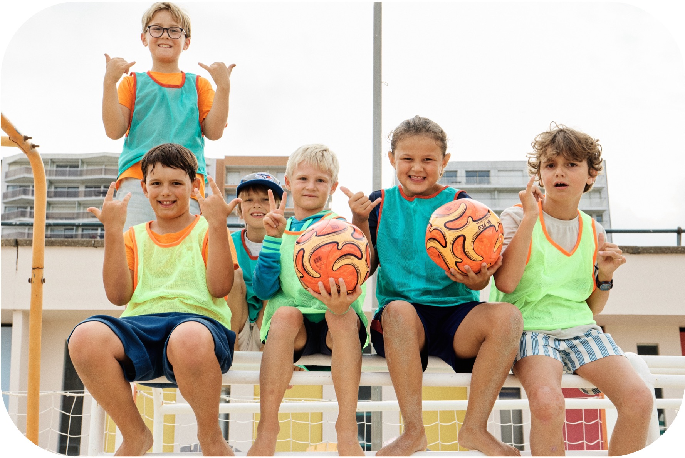
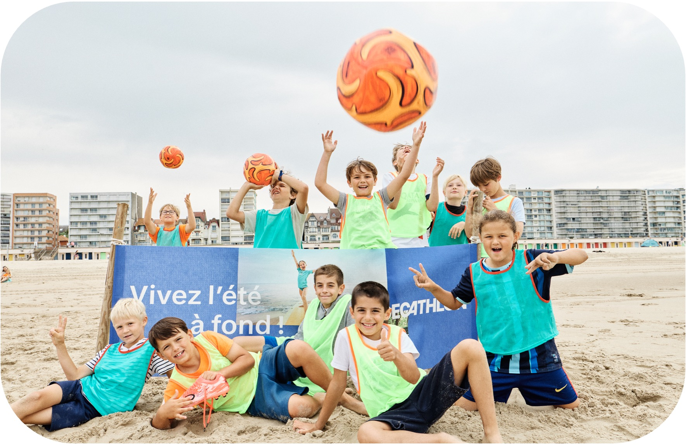
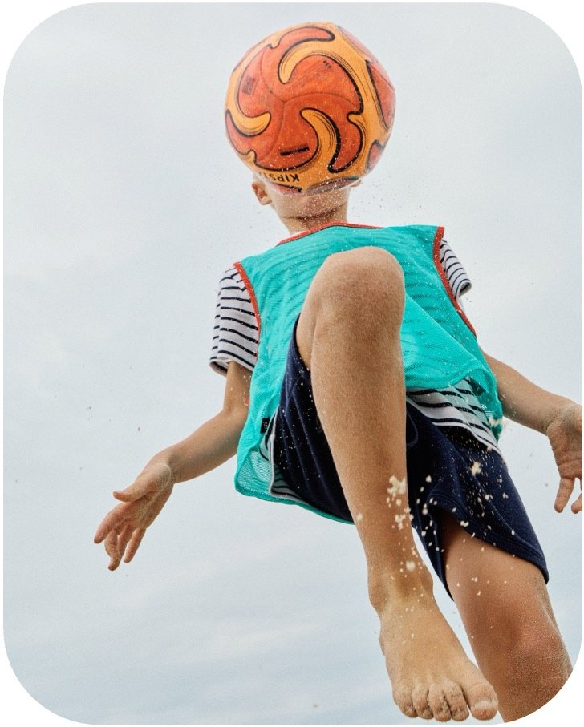

Objectif
Retour aux références
Decathlon x Club Mickey · 2022
Decathlon x Club Mickey - Football été
Activation nationale, famille, sport, littoral
Projet réalisé dans le cadre du parcours professionnel antérieur de Lucie Ramon.

Decathlon x Club MickeyActivation nationale, famille, sport, littoralPilotage d'expériencesPreuve image
Decathlon x Club MickeyActivation nationale, famille, sport, littoralPilotage d'expériencesPreuve image
Étude de cas
Contexte
Decathlon souhaitait une expérience ludique, massive et facilement déployable sur tout le littoral pendant la saison estivale.
Rôle de Lucie
- Conception et production de l'activation nationale Decathlon x Club Mickey.
- Transformation des Clubs Mickey en mini stades Decathlon.
- Déploiement de matchs, défis et animations terrain.
- Création du passeport Decathlon Football, contenus brandés et relais digital.
Matière visuelle


Chiffres & faits marquants
40 Clubs Mickey activés sur tout le littoral
+350 000 familles exposées
46 585 participations au jeu concours national
15 000 Passeports Football distribués
3 500 dotations sportives utilisées
+2M d'emails envoyés
14 587 impressions LinkedIn
Accompagnement actuel
Concevoir une activation capable de relier stratégie, terrain et visibilité.
Studio Madame-L mobilise aujourd'hui cette expertise pour accompagner les marques, lieux et talents, depuis Aix-en-Provence et partout en France.
Référence suivante